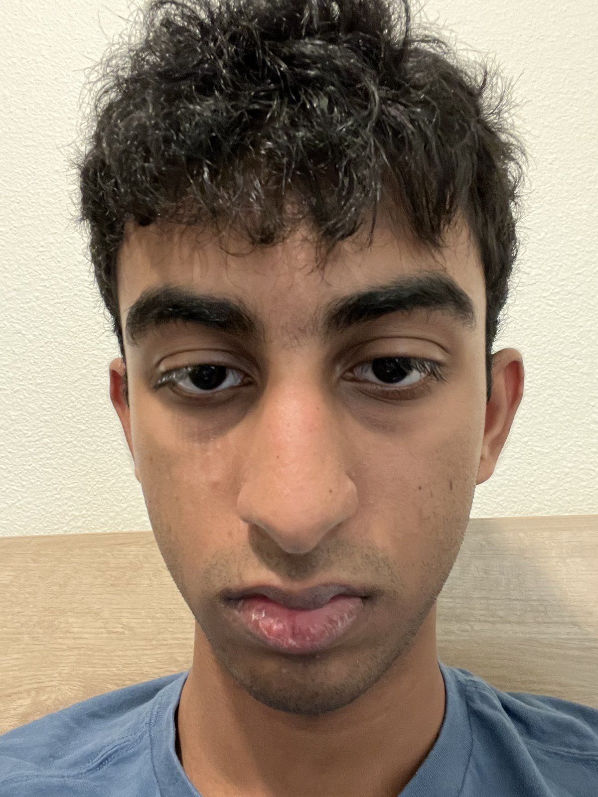
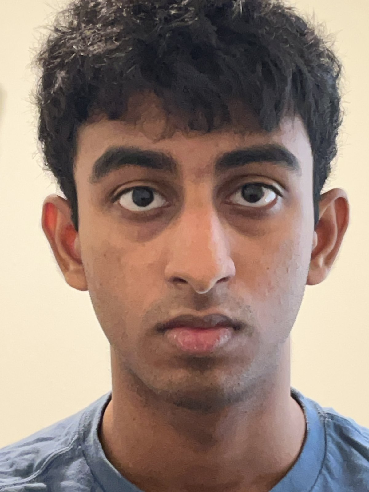
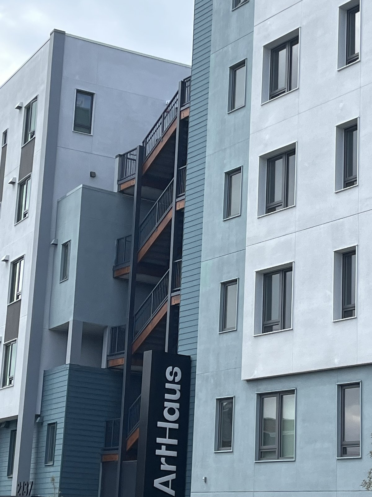
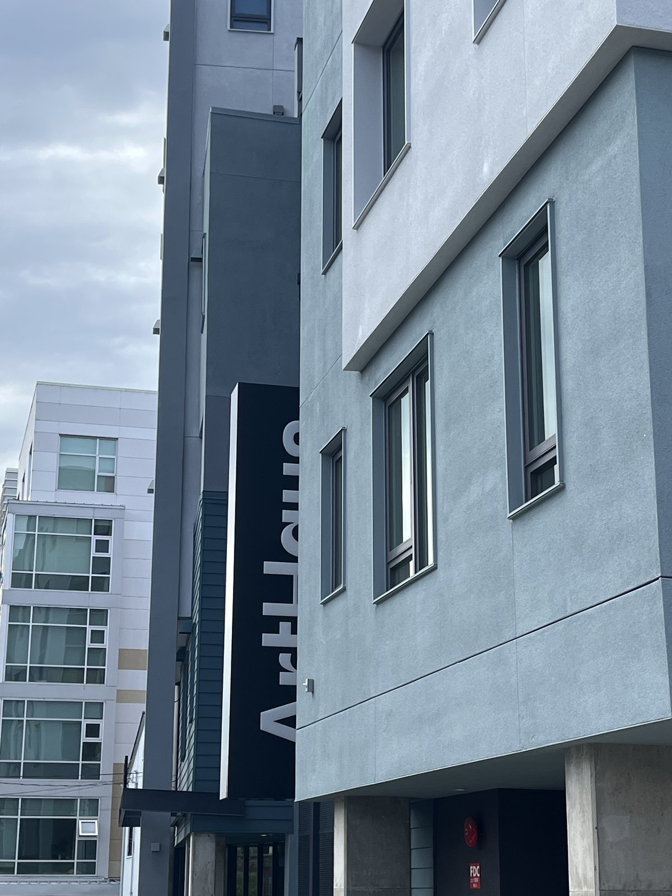
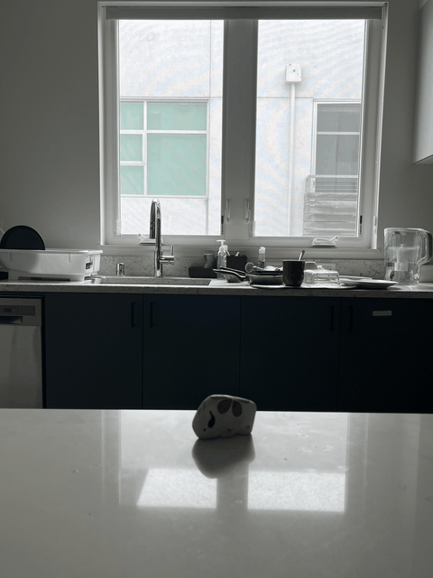
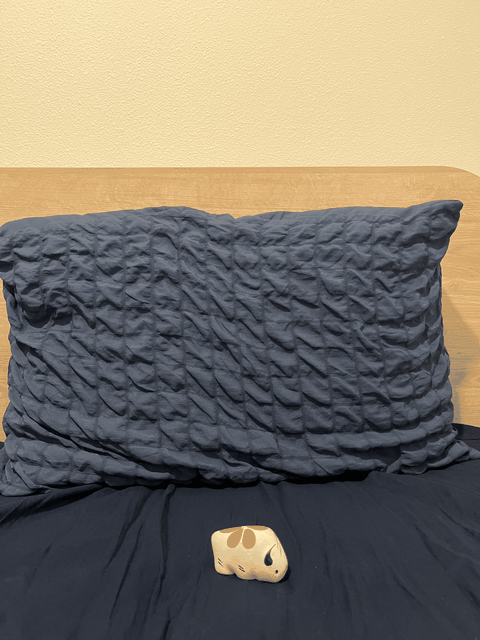

Exploring perspective, focal length/zoom, and the center of projection.
Part 1Selfie: The Wrong Way vs. The Right Way
First, a close-up selfie taken just a foot or two from the face. Then, a second
shot taken from several feet back and zoomed in so the face appears the same size.

Close-up, no zoom (the "wrong" way)

Stepped back + zoomed in (the "right" way)
Why does this happen?
A camera close to a face has to cover a wide field of view over a very short
distance, so different parts of the face sit at very different distances from
the lens. Perspective projection exaggerates whatever is closer, so the nose,
chin, and other near features balloon in size relative to the ears and background.
Stepping back and zooming in narrows the field of view and keeps the whole face at
roughly the same distance from the camera, so the relative sizes of facial
features stay proportional — closer to how the face looks in real life (and to
how a longer lens compresses depth).
Part 2Architectural Perspective Compression
The same idea, reversed and applied to a building facade: zoomed in from far
away, versus up close without zoom, matching the building's size in frame.

Far away, zoomed in (compressed)

Walked up close, no zoom
Why does this happen?
Shooting from far away with a long focal length narrows the field of view so
that every part of the facade is at nearly the same distance from the camera,
flattening the depth between the front of the building and whatever is behind
it — the classic "compressed" telephoto look. Walking right up to the building
and using a wide field of view puts the near edges of the facade much closer to
the camera than the far edges, so perspective exaggerates that depth difference,
making the building look like it recedes and its proportions distort more toward
the edges of the frame.
Part 3The Dolly Zoom
Moving the camera backward while zooming in, keeping the subject the same size
in frame, combined into an animated GIF from a sequence of stills.

Dolly zoom — kitchen scene

Dolly zoom — bedroom scene
Why does this happen?
The subject stays the same size because moving back is compensated by zooming
in, but zooming in also narrows the field of view. Everything that isn't at the
subject's exact distance — the background in particular — is affected only by
the change in field of view, not by the change in camera distance the way the
subject is. The result is that the background appears to stretch or compress
(rushing toward or away from the viewer) while the subject itself stays locked
in place and size, producing the unsettling "Vertigo" effect.